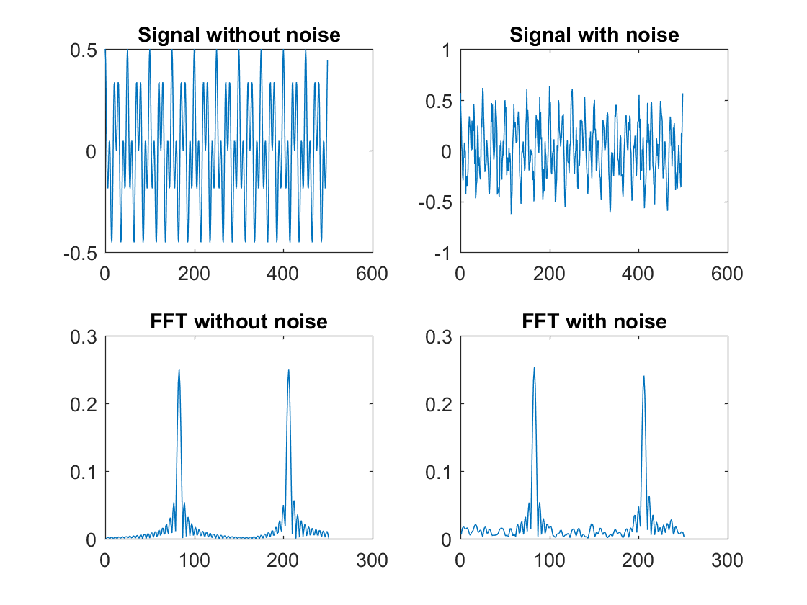
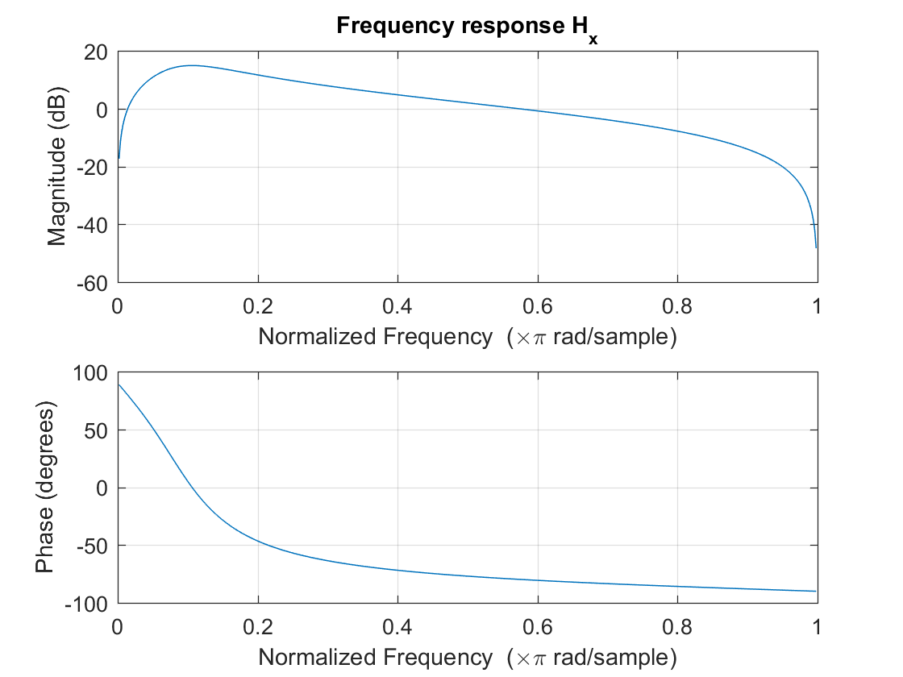
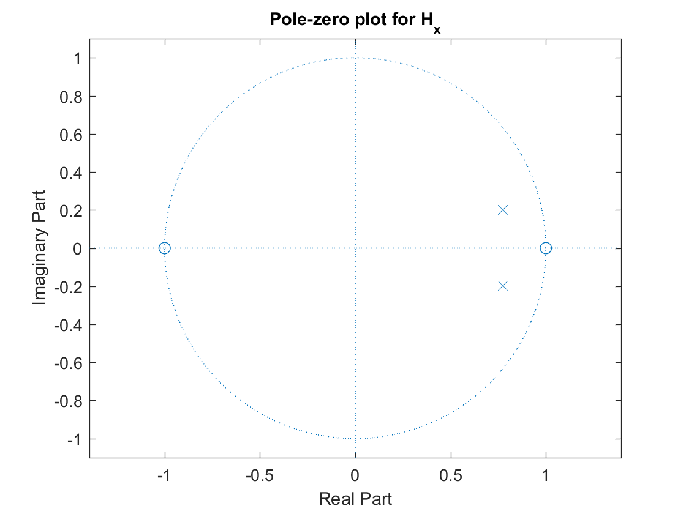
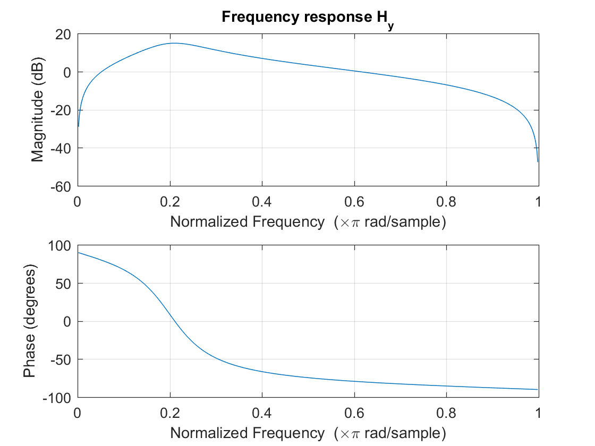
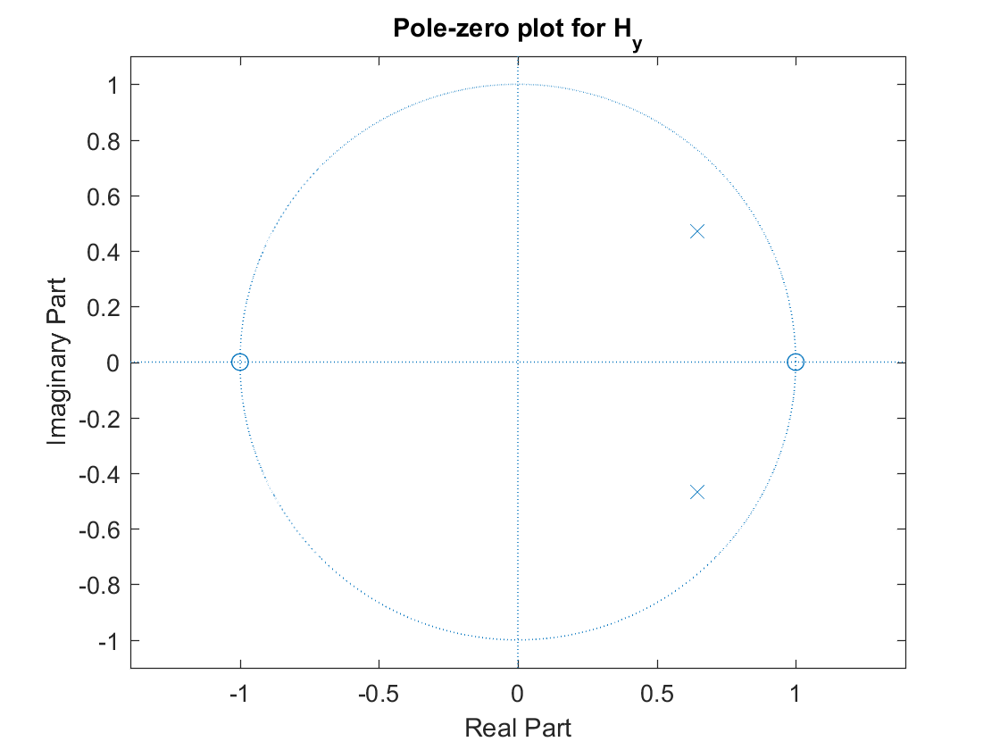
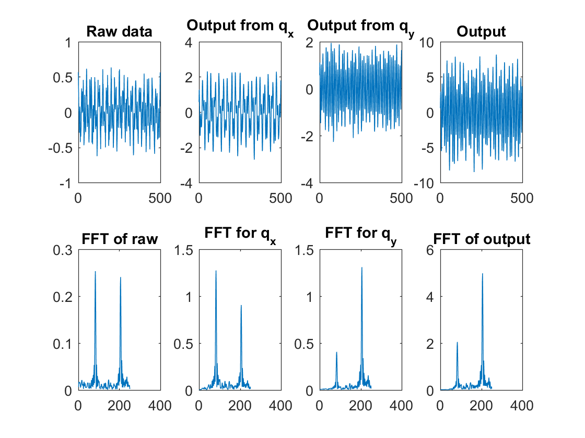

Contents
Problem 4 - a
Ax = 0.25;
Ay = 0.25;
Anoise = 0.1;
fx = 0.04;
fy = 0.10;
L = 500;
n = 0:1:(L-1);
d = Ax*cos(2*pi()*fx*n) + Ay*cos(2*pi()*fy*n);
e = Anoise*randn(size(d));
FFT_N = 2048;
Y = fft(d, FFT_N);
P2 = abs(Y/L);
P1 = P2(1:L/2+1);
P1(2:end-1) = 2*P1(2:end-1);
subplot(2,2,1);
plot(n, d); title('Signal without noise');
subplot(2,2,3);
plot(P1); title('FFT without noise');
Y = fft(d+e, FFT_N);
P2 = abs(Y/L);
P1 = P2(1:L/2+1);
P1(2:end-1) = 2*P1(2:end-1);
subplot(2,2,2);
plot(n, d+e); title('Signal with noise');
subplot(2,2,4);
plot(P1); title('FFT with noise');

Problem 4 - Digital resonators
alpha = 0.8;
wx = 2*pi()*fx;
px = alpha*exp(i*wx);
Hx_B = [1 0 -1];
Hx_A = [1 -2*alpha*cos(wx) alpha^2];
wy = 2*pi()*fy;
py = alpha*exp(i*wy);
Hy_B = [1 0 -1];
Hy_A = [1 -2*alpha*cos(wy) alpha^2];
figure(); freqz(Hx_B, Hx_A); title('Frequency response H_x');
figure(); zplane(Hx_B, Hx_A); title('Pole-zero plot for H_x')
figure(); freqz(Hy_B, Hy_A); title('Frequency response H_y');
figure(); zplane(Hy_B, Hy_A); title('Pole-zero plot for H_y');
qx = filter(Hx_B, Hx_A, d+e);
qy = filter(Hy_B, Hy_A, d+e);
figure();
Y = fft(d+e, FFT_N);
P2 = abs(Y/L);
P1 = P2(1:L/2+1);
P1(2:end-1) = 2*P1(2:end-1);
subplot(2,4,1);
plot(n, d+e); title('Raw data');
subplot(2,4,5);
plot(P1); title('FFT of raw');
Y = fft(qx, FFT_N);
P2 = abs(Y/L);
P1 = P2(1:L/2+1);
P1(2:end-1) = 2*P1(2:end-1);
subplot(2,4,2);
plot(n, qx); title('Output from q_x');
subplot(2,4,6);
plot(P1); title('FFT for q_x');
Y = fft(qy, FFT_N);
P2 = abs(Y/L);
P1 = P2(1:L/2+1);
P1(2:end-1) = 2*P1(2:end-1);
subplot(2,4,3);
plot(n, qy); title('Output from q_y');
subplot(2,4,7);
plot(P1); title('FFT for q_y');
T = filter(Hx_B, Hx_A, d+e);
T = filter(Hy_B, Hy_A, T);
Y = fft(T, FFT_N);
P2 = abs(Y/L);
P1 = P2(1:L/2+1);
P1(2:end-1) = 2*P1(2:end-1);
subplot(2,4,4);
plot(n, T); title('Output');
subplot(2,4,8);
plot(P1); title('FFT of output');
    